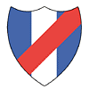
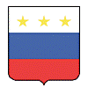
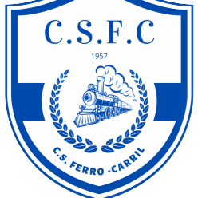
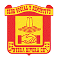
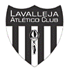
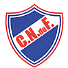
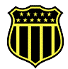
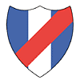
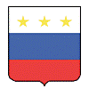
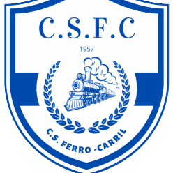
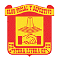
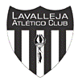
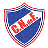
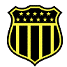
 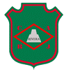
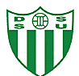
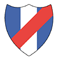
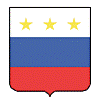
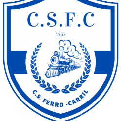
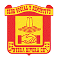
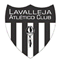
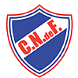
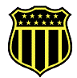
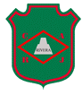
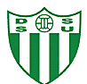
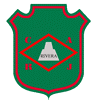
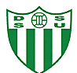
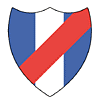
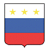
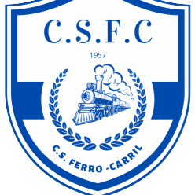
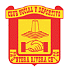
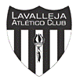
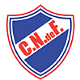
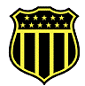
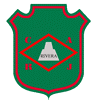
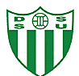
La Liga Departamental de Fútbol de Rivera es la representante del sector Rivera Capital en la confederación del Litoral Norte, dentro de la Organización del Fútbol del Interior de Uruguay (OFI). Fundada el 13 de marzo de 1913 como “Liga de Foot-Ball de Rivera”, cambió su denominación en 1921, aunque mantuvo la palabra “Foot-Ball” en inglés durante muchos años. Su primer presidente fue Carlos Gamba. Aunque su nombre oficial sugiere un carácter departamental, la liga solo incluye clubes de la ciudad capital y, en casos puntuales, de Santana do Livramento, excluyendo ligas del Sector Interior como Tranqueras, Vichadero y Minas de Corrales. La Liga organiza el Campeonato Rivera en categorías que incluyen Mayores, Sub-20, Sub-17, Sub-15, Sub-14, y recientemente, las categorías de Fútbol Femenino Mayores y Sub-16. Además, gestiona y participa en las selecciones locales en los campeonatos de OFI.
La primera competición de fútbol en la ciudad de Rivera fue la “Copa La France” en 1909, organizada por la revista homónima, que reunió a equipos uruguayos y brasileños. El primer campeón fue el 14 de Julho de Livramento, que tuvo un papel destacado en las primeras ediciones de esta liga. El Lavalleja Atlético Club, fundado el 19 de abril de 1908, es considerado el Decano del fútbol riverense. Sin embargo, el primer partido oficial de fútbol en la ciudad se realizó en 1902 entre titulares y suplentes del Juventud Riverense Foot-ball Club. La primera liga de fútbol de la frontera, creada en 1909, incluyó 10 equipos, destacándose clubes como Uruguayo, 14 de Julho, Lavalleja, Tabaré, Nacional, Rivera e Imperial. Los primeros campos de juego de la ciudad estaban ubicados en lo que hoy son Plaza Flores, Parque Internacional, Corralón Municipal y el Estadio, conocido entonces como “Field Municipal”.
El principal recinto deportivo de Rivera es el Estadio Municipal Atilio Paiva Olivera, propiedad de la Intendencia Departamental de Rivera (IDR). Inaugurado en 1927, el estadio fue reformado para la disputa de la Copa América de 1995. Para 2024, el recinto ha pasado por importantes remodelaciones en su infraestructura general. Actualmente, su capacidad es de 27,135 espectadores y es utilizado tanto por las selecciones locales como por los clubes de la ciudad.
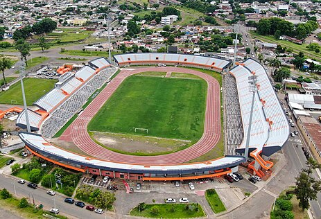| Equipo | Títulos |
|---|---|
| Oriental | 23 |
| Lavalleja | 21 |
| Peñarol | 21 |
| Sarandí Universitario | 12 |
| Frontera Rivera Chico | 8 |
| Huracán | 7 |
| Cuñapirú | 5 |
| Artigas | 4 |
| Nacional | 2 |